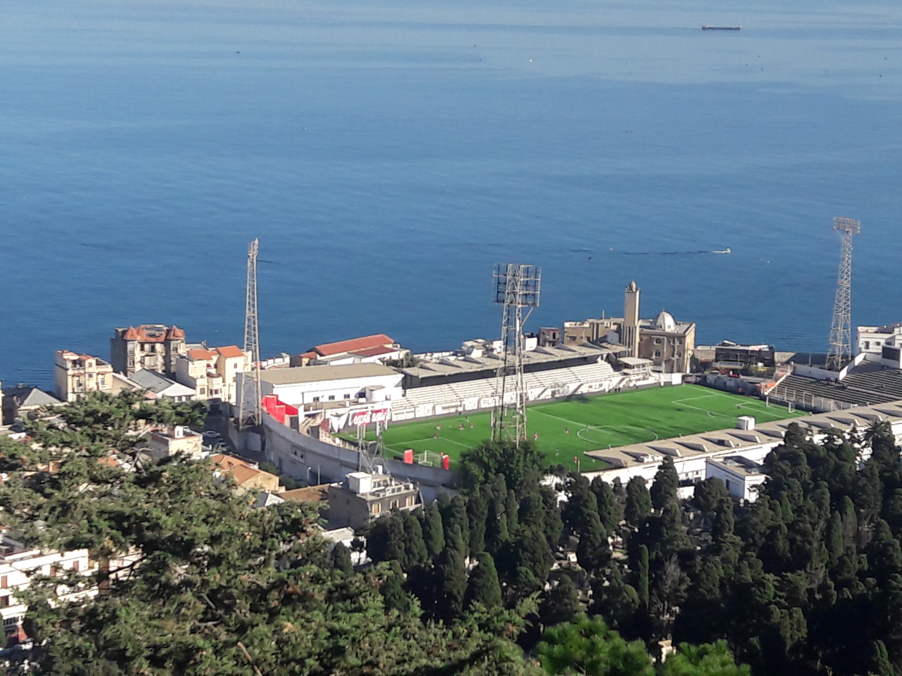

NOTRE DOSSIER DE LA SEMAINE
BAB EL OUED : UN QUARTIER, MILLE HISTOIRES
Entre Méditerranée, traditions et patrimoine, découvrons l'un des quartiers les plus emblématiques d'Alger.

Situé au nord-ouest d'Alger, Bab El Oued est un quartier connu pour son identité populaire, son ambiance animée, ses marchés traditionnels et sa proximité avec la mer. Il représente une partie importante de la mémoire et de la culture algéroises.
UN VOYAGE DANS LE TEMPS : L'ÉPOQUE OTTOMANE
L'histoire de Bab El Oued est étroitement liée à celle de la vieille ville d'Alger, notamment à l'époque de la Régence ottomane (1515-1830).
À cette époque, Bab El Oued était avant tout l'une des portes des remparts qui protégeaient Alger. Elle permettait de sortir de la médina en direction de l'ouest et de l'oued M'Kacel.
Le territoire situé à l'extérieur des remparts était principalement rural et agricole. Il était appelé « El Fahs » et comprenait notamment des terrains cultivés et des jardins.
Cette ancienne porte avait donc une importance stratégique et géographique : elle reliait la ville fortifiée aux routes menant vers les régions occidentales et les hauteurs de Bouzaréah.
Aujourd'hui, le nom Bab El Oued conserve le souvenir de cette ancienne entrée historique.
LES CHARMES D'UN QUARTIER AUTHENTIQUE
Bab El Oued ne se résume pas à son histoire. C'est aussi un quartier vivant, où les traditions, les commerces et la convivialité occupent une place importante dans la vie quotidienne.
La place des Trois Horloges
Véritable point de rencontre du quartier, la place des Trois Horloges est un lieu emblématique où se croisent habitants, commerçants et visiteurs.
Le marché Triolet
Connu pour son ambiance populaire, ce lieu témoigne de la tradition commerciale et de l'animation quotidienne de Bab El Oued.
Le front de mer d'El Kettani
À proximité de la Méditerranée, le front de mer offre un cadre agréable pour admirer le paysage, profiter de l'air marin et se promener.
Les jardins et les espaces verts
Le jardin de Prague et les espaces verts du quartier permettent de découvrir un autre visage d'Alger, plus calme et reposant.
QUE FAIRE À BAB EL OUED ?
Pour les visiteurs, Bab El Oued offre plusieurs possibilités de découverte et de loisirs.
1. Découvrir les marchés locaux
Se promener dans les marchés, découvrir les produits locaux et observer l'animation commerciale du quartier.
2. Profiter du bord de mer
Faire une promenade sur le front de mer d'El Kettani, profiter de la brise méditerranéenne et admirer les paysages côtiers.
3. Découvrir le patrimoine historique
Explorer les environs de la Casbah d'Alger, découvrir son architecture traditionnelle et mieux comprendre l'histoire de la capitale.
4. Photographier les paysages
Profiter des hauteurs et des points de vue sur la baie d'Alger pour prendre de magnifiques photographies.
5. Découvrir la culture locale
Goûter aux spécialités algériennes, visiter les commerces traditionnels et découvrir l'hospitalité des habitants.
NOTRE CONCLUSION
Bab El Oued est bien plus qu'un simple quartier d'Alger. C'est un lieu où l'histoire rencontre la vie quotidienne, où les traditions se transmettent et où la Méditerranée donne au paysage un charme unique.
De son ancienne porte ottomane à ses rues animées d'aujourd'hui, Bab El Oued mérite d'être découvert, préservé et valorisé.